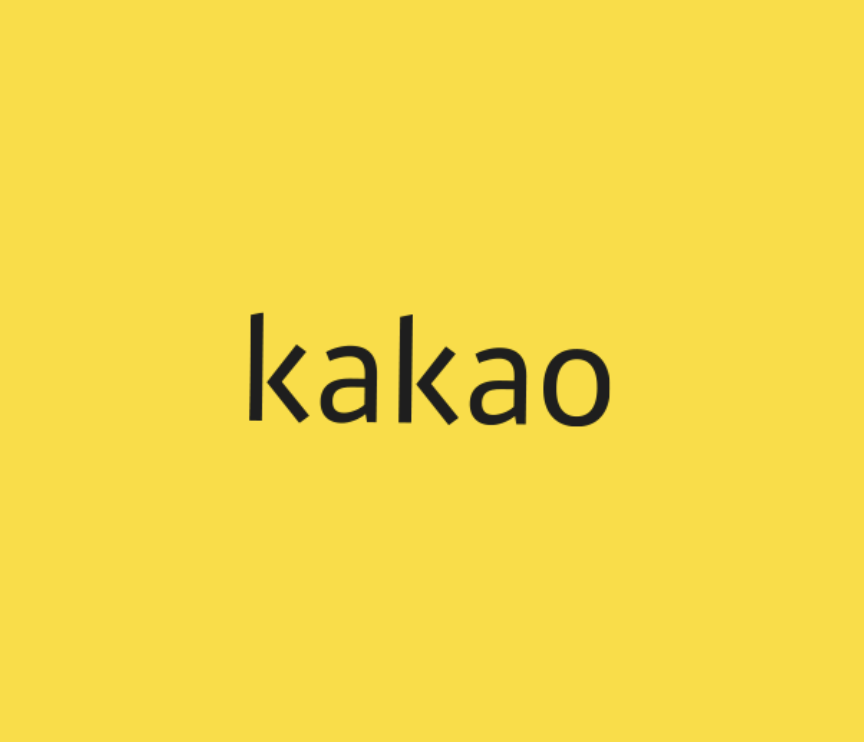

나의 북마크
Apple
새롭게 선보이는 iPhone 16 Pro 및 iPhone 16.
네이버
대한민국 대표 포털사이트 네이버에 오신 것을 환영합니다.

Kakao
기술과 사람으로 더 나은 세상을 만드는 카카오
YouTube
YouTube에서 마음에 드는 동영상과 음악을 감상하고 ...
공부할 것
TW
Tailwind CSS
Tailwind CSS is a utility-first CSS framework for rapidly building ...
R
React
사용자 인터페이스를 만들기 위한 JavaScript 라이브러리